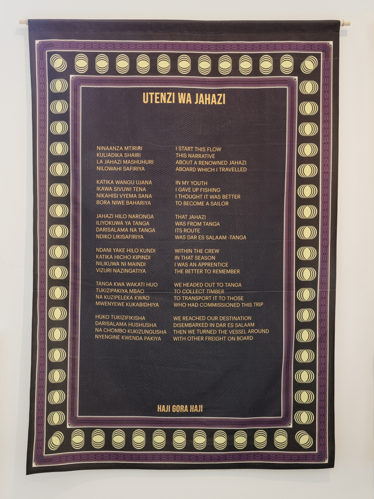
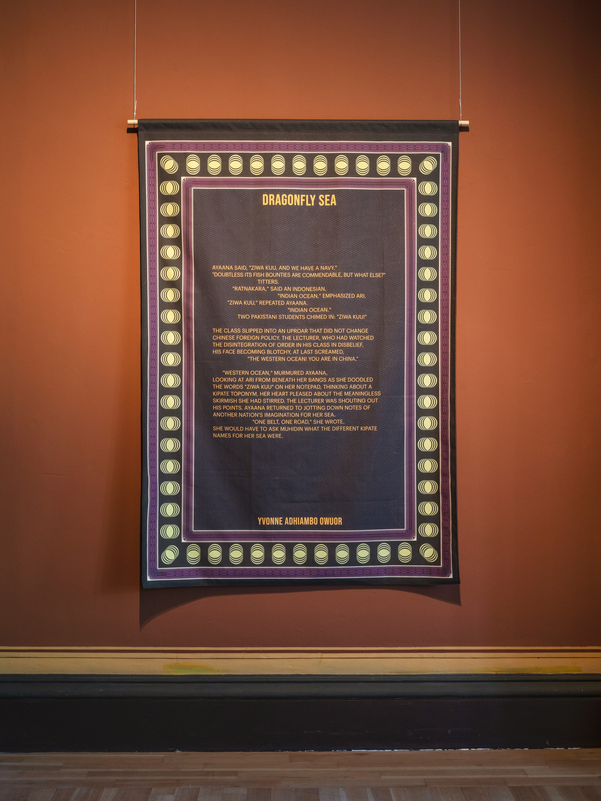

Abdourahman Waberi

Adama Delphine Fawundu


Clara Jo

Dominic Sansoni


HajiGoraHaji

Jack Beng-Thi


Jasmine Nilani Joseph


Jeewi Lee


Jennifer Tee


Kelani Abass


Kudzanai-Violet Hwami und Belinda Zhawi


Köken Ergun

Lavanya Mani

M'barek Bouhchichi


Oscar Murillo

Rosella Biscotti


Shiraz Bayjoo


Sim Chi Yin


Tishani Doshi

YvonneAdhiambo

Multiple Artists


Photograph: Luca Girardini

Photograph: Luca Girardini

Photograph: Luca Girardini